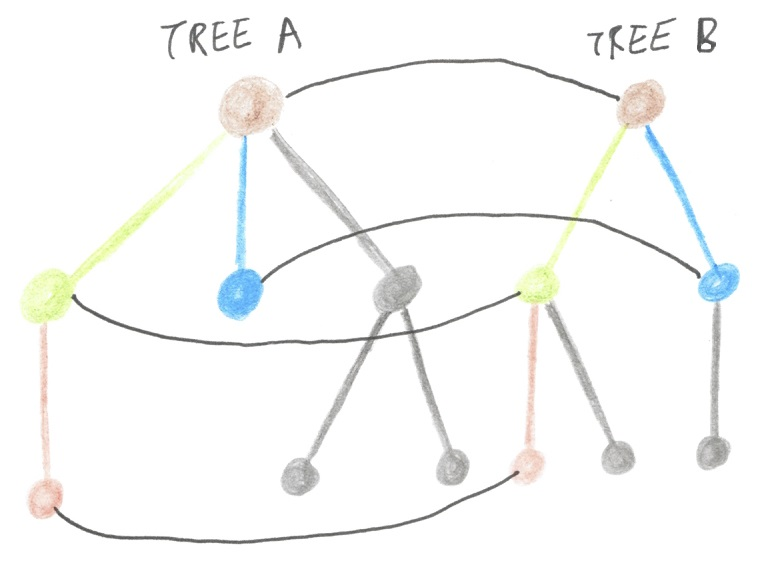

Zip-Folding
One of my favourite little gems of functional programming is the following implementation of the dot product:
dot zips two lists of numbers, multiplying each pair of elements using (*), and then aggregates the results with sum. It’s like a map-reduce program, but it processes two collections, not one. It generalises rather beautifully to any zippily Applicative Foldable container whose elements form a Semiring:
dot :: (Semiring a, Applicative t, Foldable t) => t a -> t a -> a
xs `dot` ys = foldl' (<+>) zero (liftA2 (<.>) xs ys)I think I’m particularly taken with this example because it combines three different abstractions in a totally natural way to produce a concise and generic implementation of a well-known program. It’s a beautiful demonstration of how these mathematical tools fit together. It also happens to be an example of a programming pattern that I call zip-folding.
Until recently I felt rather embarrassed that my C# generic programming library Sawmill didn’t have a good story for consuming more than one tree at a time. I had lots of tools for querying, editing, and tearing down single trees, but nothing that could help you process two trees at once. This is a very common requirement - for example, if you’re unit testing a parser or a transformation pass, you need to compare the output tree to the one that you expected.
I got to thinking about what it means to zip two trees together - an operation which should make sense if you think of a tree as a container of subtrees. Pairing up nodes in a tree is straightforward, even if the two trees are unevenly shaped. You just pair up the children of each pair of nodes, ignoring those which don’t have a partner (the grey-coloured ones in the drawing):

But I got stuck on how to plug those paired nodes back into a single tree representing the zipped trees. Nodes typically have space for a fixed number of children, but pairing up children will typically change that number. That is, a binary operator has precisely two children, but when zipping two binary operators together you need to do something with four children.
And, more generally, what would it mean to zip trees recursively? You can imagine a scheme wherein each child of a node is replaced with a tuple of two children. But each child is really a subtree, with its own children, so the two subtrees need to be zipped - but that ought to produce a single tree, not a pair of trees. It’s contradictory! The intuitive idea that a node in a tree is a container of subtrees fails when you consider zipping.
Guess where this is going: you can’t zip trees to produce a new tree, but you can zip-fold trees to produce a value. The idea is to take pairs of nodes in a tree and combine them with the results of zipping their children.
Let’s start by looking at (an abbreviated version of) Sawmill’s existing Fold. Fold says if you give me a way to combine a node with the results of folding its children, I can recursively fold the entire tree to produce a single summary value.
public static U Fold<T, U>(
this T value,
Func<T, Children<U>, U> func,
) where T : IRewritable<T>
=> func(
value,
value.GetChildren()
.Select(child => child.Fold(func))
);Revisiting the JQL example, Fold will take an input tree like [c#] and (not [javascript] or salary:50000gbp) and compute the expression:
func(
new AndNode(/* ... */),
Children.Two(
func(new TagNode("c#"), Children.None<U>()),
func(
new OrNode(/* ... */),
Children.Two(
func(
new NotNode(/* ... */),
Children.One(
func(
new TagNode("javascript"),
Children.None<U>()
)
)
),
func(new SalaryNode(50000, "gbp"), Children.None<U>())
)
)
)
)Fold traverses a tree from bottom to top, applying func to each subtree and the current set of intermediate results.
ZipFold works by analogy to Fold. It says if you give me a way to combine two nodes with the results of zip-folding their children, I can recursively zip the two entire trees to produce a single summary value. ZipFold pairs up the children of the two input nodes using the standard Enumerable.Zip, recursively zip-folds each pair, and then feeds the results to func. Note that the length of the IEnumerable that’s passed to func is the length of the smaller of the two nodes’ collections of children.
public static U ZipFold<T, U>(
this T value1,
T value2
Func<T, T, IEnumerable<U>, U> zipFunc,
) where T : IRewritable<T>
=> zipFunc(
value1,
value2,
value1.GetChildren().Zip(
value2.GetChildren(),
(child1, child2) => child1.ZipFold(child2, zipFunc)
)
);The two trees are zipped together and torn down in a single pass.
Here’s how it looks in Haskell, using the Control.Lens.Plated API. Haskellers like to use tongue-in-cheek Greek names for recursion schemes. Apparently the Greek word for “zip” is “fermouár”, so I’m calling this a fermomorphism.
fermo :: Plated a => (a -> a -> [r] -> r) -> a -> a -> r
fermo f x y = f x y $
zipWith (fermo f) (toListOf plate x) (toListOf plate y)As an example: ZipFold allows you to concisely test a pair of trees for equality, by looking only at one pair of nodes at a time.
public static bool Equal(JqlNode j1, JqlNode j2)
=> j1.ZipFold<JqlNode, bool>(
j2,
(n1, n2, childrenEqual) =>
{
switch (n1)
{
case SalaryNode s1 when n2 is SalaryNode s2:
return s1.Currency == s2.Currency
&& s1.Amount == s2.Amount;
case TagNode t1 when n2 is TagNode t2:
return t1.Tag == t2.Tag;
case AndNode a1 when n2 is AndNode a2:
case OrNode o1 when n2 is OrNode o2:
case NotNode a1 when n2 is NotNode a2:
return childrenEqual.All(c => c);
default:
return false;
}
}
);The ZipFold that you’ll find in Sawmill is actually an n-ary zip-fold. Instead of taking two Ts, and passing two Ts to func, it works with an arbitrary number of Ts. Here’s the code:
public static U ZipFold<T, U>(
this T[] values,
Func<T[], IEnumerable<U>, U> func,
) where T : IRewritable<T>
=> func(values, xs.ZipChildren(children => children.ZipFold(func)));
private static IEnumerable<U> ZipChildren<T, U>(
this T[] input,
Func<T[], U> zipFunc
) where T : IRewritable<T>
{
var enumerators = input
.Select(x => x.GetChildren().GetEnumerator())
.ToArray();
while (enumerators.All(e => e.MoveNext()))
{
yield return zipFunc(
enumerators.Select(e => e.Current).ToArray()
);
}
}Sadly, the invariant that zipFunc receives the same number of Ts as were passed to ZipFold is not expressible in C#’s type system. So as a consumer of ZipFold, you just have to trust that zipFunc’s argument is of a certain size. In the Equal example, that size is two, because we’re consuming two trees:
public static bool Equal(JqlNode j1, JqlNode j2)
=> new[] { j1, j2 }.ZipFold<JqlNode, bool>(
(ns, childrenEqual) =>
{
switch (ns[0])
{
case SalaryNode s1 when ns[1] is SalaryNode s2:
return s1.Currency == s2.Currency
&& s1.Amount == s2.Amount;
case TagNode t1 when ns[1] is TagNode t2:
return t1.Tag == t2.Tag;
case AndNode a1 when ns[1] is AndNode a2:
case OrNode o1 when ns[1] is OrNode o2:
case NotNode n1 when ns[1] is NotNode n2:
return childrenEqual.All(c => c);
default:
return false;
}
}
);Here’s the Haskell transliteration of this n-ary zip-fold function, which traverses in the ZipList Applicative to concisely zip n lists of children:
fermo :: Plated a => ([a] -> [r] -> r) -> [a] -> r
fermo f xs = f xs (
map (fermo f) $ getZipList $ traverse (ZipList . toListOf plate) xs
)ZipFold is available in version 1.3.0 of Sawmill.